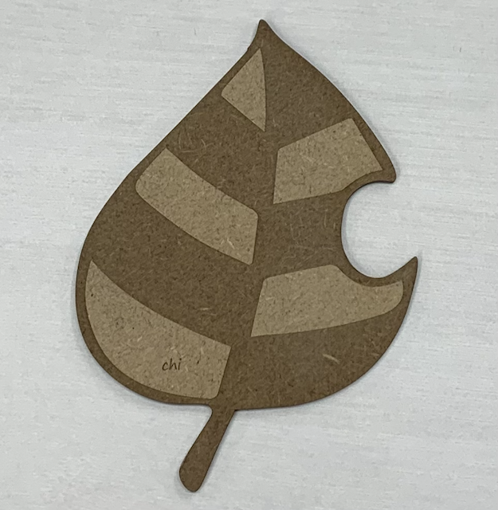
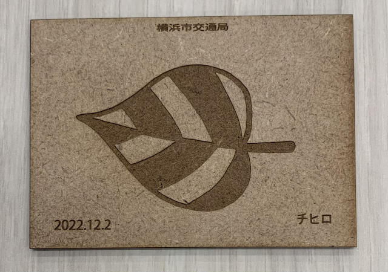
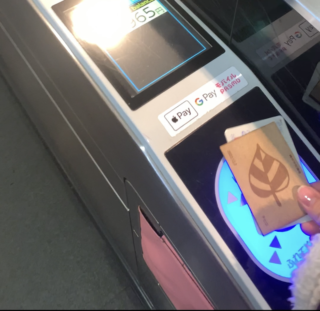

問題
電車におじいさん(フリースが落ち葉だらけ、順番守らない、頑固)がいた。
↓
おじいさん「最近の若者は〜」とおじいさん同士大きな声で話していた。
↓
若者とお年寄りは分かり合えないのか？
↓
車両を世代で分けてみたら快適に過ごせるのでは？
↓
車両を分けるため、ICカードも世代別に分けることにする。
(どの年代でも入れる車両を作ることで、親子などでも一緒に乗れるようにする。)
作品



説明
最初は葉っぱの形にしていたが、使い勝手が悪そう、ケースがないため無くしそう、と思ったため、よく使われている交通系ICと同じような形にした。
その代わりに、ICカードの表面に年代別の葉を描き、差がわかるようにした。
落ち葉だらけのフリースを着たおじいさんがいたため、葉を描くデザインにした。
使用機材
レーザーカッター
同じ班のメンバーのページのリンク
佐伯隼人さん
安池海夕さん
冨樫彩華さん
森廣隆太郎さん